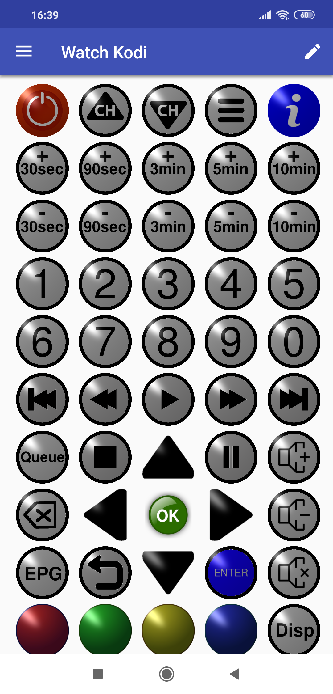

Activity Remote
The Activity Remote screen opens when you click on an Activity Item in the Navigation Menu. When first initiated the Activity will switch Devices into the required state (ON if needed, otherwise OFF); then the Activity startup Key Sequence will be transmitted if one has been set.
From here you can:
- Press Keys to send the appropriate Infra-Red Command(s) to Devices,
- Open the Navigation Menu and from here:
- Use a Device Remote
- Edit a Device
- Edit a different Activitys' settings
- Change the running Activity
- Edit the remote layout* (Press
 at top right of screen)
at top right of screen)
*Edit Mode is described below.
An activity continues to run until you either:
- Press the OFF button, or
- Press the Back button, or
- Switch to another Activity via the Navigation Menu, or
- The App is forcefully terminated
When transmission is in progress this is indicated by a  icon at the top left of the remote.
icon at the top left of the remote.

 . Select the Move option then click on the destination position you want.
. Select the Move option then click on the destination position you want. at the top right of the screen.
at the top right of the screen.